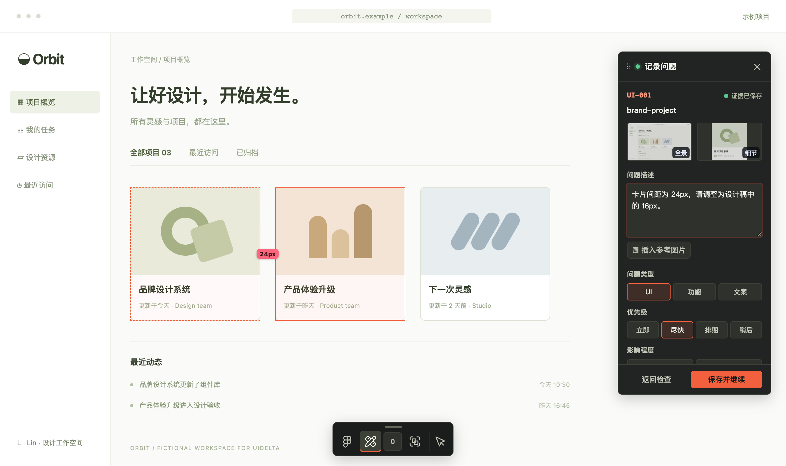

01 收到 ZIP
问题，已经带上地址。
ZIPUIDelta-review.zip
页面
orbit.example/workspace元素定位
[data-testid='brand-project']截图与实测间距

修改要求24px → 16px
report.md · issues.json · assets/
02 交给 Codex
从线索，找到实现。
Codex+你的项目源码
读取这个走查包，
找到对应实现，按要求修改，
完成后在页面复核。
- 1读取报告与截图
- 2用定位线索查找组件
- 3确认样式来源，再修改
提供项目路径、运行方式
与修改授权。
03 回到页面
按问题，逐项复核。
示例修改 · 父容器间距
.projects {− gap: 24px;+ gap: 16px;}UI-001 · 验收目标16px
在对应页面与视口，确认实际效果。
修改文件验证结果未解决项